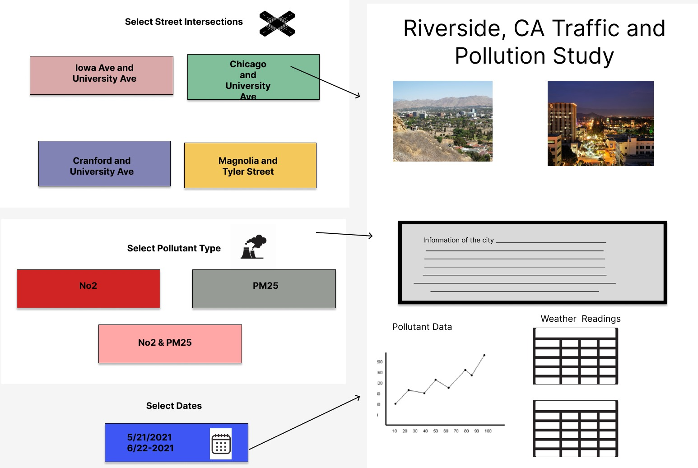

Description of the application user interface
Our user interface will be composed of some images of the city we are talking about in this case Riverside
Linked data
Then there is going to be a description indicating some brief data that is linked to ours for example
When selecting a certain date some data will appear refering to the number of cars were on Riverside on that date
Ej: Soil Temperature of that date
Soil Moisture of that date
Snow fallen
Rain fallen
Snowdepth
and so on
Data selection
There will be a date dropdown to filter the data to select the date that the user wats to see and the proper data will be displayed
Data representation
There will be an time series for both values NO2 data and P25 data representing the date selected
There will be a small dashboard representing the average of some data such as temperature, wind speed, humidity, etc.
Entities that can be linked to another dataset
datetime-America/Los_Angeles: Can be linked to other datasets that have similar timestamps for the same territory
Although there is no column for city we know all of the data comes from Riverside California and we can linked any dataset containing Riverside or any dataset specifically related to Riversdie
https://open-meteo.com/en/docs/historical-weather-api#start_date=2021-05-10&end_date=2021-05-30&hourly=temperature_2m,relative_humidity_2m,precipitation&temperature_unit=fahrenheit&wind_speed_unit=mph&timezone=America%2FLos_Angeles
https://www.wikidata.org/wiki/Q49243
Entities that can be linked within the selected files
datetime-America/Los_Angeles:
Iowa NO2 [ppb],Chicago NO2 [ppb],Cranford NO2 [ppb],Magnolia NO2 [ppb]
Mockup
